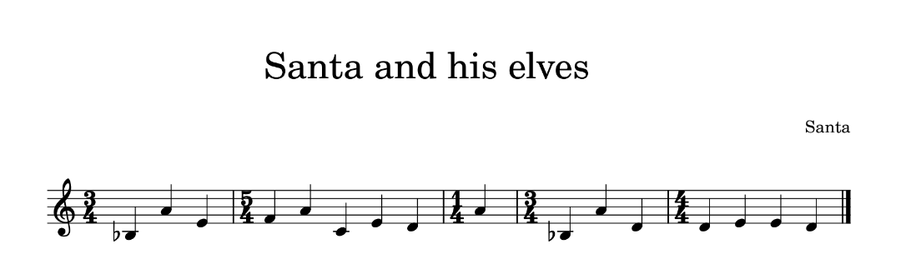

Overview
| Challenge | Difficulty | Points | Category | Flag |
|---|---|---|---|---|
| Dec 1: QR means quick reactions, right? | easy | HV22{I_CaN_HaZ_Al_T3h_QRs_Plz} | ||
| Dec 2: Santa's Song | easy | unsolved | ||
| Dec 3: gh0st | easy | HV22{nUll_bytes_st0mp_cPy7h0n} | ||
| Dec 4: Santa's Radians | easy | HV22{C4lcul8_w1th_PI} | ||
| Dec 5: Missing Gift | easy | HV22{this-is-a-w4ste-of-pl4stic} |
Dec 1: QR means quick reactions, right?
Challenge
Santa’s brother Father Musk just bought out a new decoration factory. He sacked all the developers and tried making his own QR code generator but something seems off with it. Can you try and see what he’s done wrong?

Solution
The gif cycles through multiple QR codes quickly, let’s read all of them:
First, we extract each frame using imagemagich:
1
2
$ mkdir img
$ convert hackvent2022_01.gif -coalesce img/xx_%05d.png
We get 30 images, all with different QR codes. Let’s read all of them using zbar-tools
1
2
3
4
5
6
7
8
9
10
11
12
13
14
15
16
17
18
19
20
21
22
23
24
25
26
27
28
29
30
31
32
33
34
$ cd img
$ zbarimg .
QR-Code:H
QR-Code:V
QR-Code:2
QR-Code:2
QR-Code:{
QR-Code:I
QR-Code:_
QR-Code:C
QR-Code:a
QR-Code:N
QR-Code:_
QR-Code:H
QR-Code:a
QR-Code:Z
QR-Code:_
QR-Code:A
QR-Code:l
QR-Code:_
QR-Code:T
QR-Code:3
QR-Code:h
QR-Code:_
QR-Code:Q
QR-Code:R
QR-Code:s
QR-Code:_
QR-Code:P
QR-Code:l
QR-Code:z
QR-Code:}
scanned 30 barcode symbols from 30 images in 3.1 seconds
So each frame gives us one letter of the flag, putting them all togeher we get
Flag
HV22{I_CaN_HaZ_Al_T3h_QRs_Plz} Dec 2: Santa's Song
Challenge
Santa has always wanted to compose a song for his elves to cherish their hard work. Additionally, he set up a vault with a secret access code only he knows!
The elves say that Santa has always liked to hide secret messages in his work and they think that the vaults combination number may be hidden in the magnum opus of his.
What are you waiting for? Go on, help the elves!
Hint #1: Keep in mind that you are given a web service, not a play button for a song.
Hint #2: As stated in the description, Santa’s vault accepts a number, not text.
Solution
We get a website with a submission form:

And the pdf with the song containing the score:

This is explicitly not a web challenge, and we see nothing suspicious in the pdf file, so the answer must lie in the music notes ..but I am totally not musical so nothing obvious to me..
Flag
unsolved Dec 3: gh0st
Challenge
The elves found this Python script that Rudolph wrote for Santa, but it’s behaving very strangely. It shouldn’t even run at all, and yet it does! It’s like there’s some kind of ghost in the script! Can you figure out what’s going on and recover the flag?
Solution
The code is:
1
2
3
4
5
6
7
8
9
10
11
12
13
14
15
16
17
18
19
20
21
22
23
24
25
26
27
28
29
30
31
32
33
34
35
36
37
38
39
40
41
42
43
44
45
46
47
48
49
50
51
52
53
54
55
56
57
58
59
#!/usr/bin/env python3.7
import random
import sys
if len(sys.argv) != 2:
print(f'''usage: {sys.argv[0]} flag''')
sys.exit()
print('''Things are not what they seem?''')
# only one in a million shall pass
if random.randrange(1000000):
sys.exit()
# this isn't going to work
print(''')#%^$&*(#$%@^&*(#@!''')
print('''Nice job getting lucky there! But did you get the flag?''')
# Santa only wants every third line!
song = """You know Dasher, and Dancer, and"""
#song += """#Prancer, and Vixen,"""
#song += """#Comet, and Cupid, and"""
song += """Donder and Blitzen"""
#song += """#But do you recall"""
#song += """#The most famous reindeer of all"""
song += """Rudolph, the red-nosed reindeer"""
#song += """#had a very shiny nose"""
#song += """#and if you ever saw it"""
song += """you would even say it glows."""
#song += """#All of the other reindeer"""
#song += """#used to laugh and call him names"""
song += """They never let poor Rudolph"""
#song += """#play in any reindeer games."""
#song += """#Then one foggy Christmas eve"""
song += """Santa came to say:"""
#song += """ #Rudolph with your nose so bright,"""
#song += """ #won't you guide my sleigh tonight?"""
song += """Then all the reindeer loved him"""
#song += """#as they shouted out with glee,"""
#song += """#Rudolph the red-nosed reindeer,"""
song += """you'll go down in history!"""
print(song)
flag = list(map(ord, sys.argv[1]))
correct = [17, 55, 18, 92, 91, 10, 38, 8, 76, 127, 17, 12, 17, 2, 20, 49, 3, 4, 16, 8, 3, 58, 67, 60, 10, 66, 31, 95, 1, 93]
for i,c in enumerate(flag):
flag[i] ^= ord(song[i*10 % len(song)])
#print(flag[i],"-", flag[i]^correct[i])
for i,c in enumerate(correct):
correct[i] ^= ord(song[i*10 % len(song)])
print(correct[i],"-", chr(correct[i]))
print("".join([chr(a) for a in correct]))
if all([c == f for c,f in zip(correct, flag)]):
print('''Congrats!''')
else:
print('''Try again!''')
So the the list correct encodes the flag. Luckily it is XOR based, so easy to reverse. We can just add a bit of code to make it give us the flag.
We also see some sneaky null bytes inside all the strigs when we open with Vim:
But these won’t really affect us since we’re making the program compute the answer for us.
Here is the code we add near the bottom of the file:
1
2
3
4
5
6
7
#copy the existing function, just use correct instead of flag, since it's XOR
for i,c in enumerate(correct):
correct[i] ^= ord(song[i*10 % len(song)])
print(correct[i],"-", chr(correct[i]))
# print out the flag all at once
print("".join([chr(a) for a in correct]))
And this gives us the flag!
1
2
3
4
5
6
7
8
9
10
11
12
13
14
15
16
17
18
19
20
21
22
23
24
25
26
27
28
29
30
31
32
33
34
$ python3 gh0st.py aaa
Nice job getting lucky there! But did you get the flag?
72 - H
86 - V
50 - 2
50 - 2
123 - {
110 - n
85 - U
108 - l
108 - l
95 - _
98 - b
121 - y
116 - t
101 - e
115 - s
95 - _
115 - s
116 - t
48 - 0
109 - m
112 - p
95 - _
99 - c
80 - P
121 - y
55 - 7
104 - h
48 - 0
110 - n
125 - }
HV22{nUll_bytes_st0mp_cPy7h0n}
Try again!
Flag
HV22{nUll_bytes_st0mp_cPy7h0n} Dec 4: Santa's Radians
Challenge
Santa, who is a passionate mathematician, has created a small website to train his animation coding skills. Although Santa lives in the north pole, where the degrees are very low, the website’s animation luckily did not freeze. It just seems to move very slooowww. But how does this help…? The elves think there might be a flag in the application…
Solution
en a website with some moving discs:
We look at the html code for the page:
1
2
3
4
5
6
7
8
9
10
11
12
13
14
15
16
17
18
19
20
21
22
23
24
25
26
27
28
29
30
31
32
33
34
35
36
37
38
39
40
41
42
43
44
45
46
47
48
<!DOCTYPE html>
<html lang="en">
<head>
<meta charset="UTF-8">
<title>The UPICode</title>
</head>
<body>
<h3>[HV22.04] Santa's radians</h3>
<canvas width="1200" height="200" id="canvasPiCode" style="border: 1px solid black"></canvas>
<script>
const canvas = document.getElementById("canvasPiCode");
const context = canvas.getContext("2d");
let clientX = 0;
canvas.addEventListener('mousemove', e => {
clientX = e.clientX*7/1000;
});
let rot = [2.5132741228718345, 0.4886921905584123, -1.2566370614359172, 0, 2.548180707911721, -1.9547687622336491, -0.5235987755982988, 1.9547687622336491, -0.3141592653589793, 0.6283185307179586, -0.3141592653589793, -1.8151424220741028, 1.361356816555577, 0.8377580409572781, -2.443460952792061, 2.3387411976724013, -0.41887902047863906, -0.3141592653589793, -0.5235987755982988, -0.24434609527920614, 1.8151424220741028];
let size = canvas.width / (rot.length+2);
context.strokeStyle = "black";
context.lineWidth = size*5/16;
context.shadowOffsetX = size/4;
context.shadowOffsetY = size/4;
context.shadowColor = "gray";
context.shadowBlur = size/4;
let animCount = 0;
function anim() {
context.clearRect(0,0,canvas.width,canvas.height);
for (let i = 0; i < rot.length; i++) {
context.beginPath();
context.arc((i + 1) * size, canvas.height / 2, size * 2 / 7, rot[i]+animCount+clientX, rot[i] + 5 +animCount+clientX);
context.stroke();
}
animCount+=0.001;
requestAnimationFrame(anim);
}
anim();
</script>
</body>
</html>
So the rot variable likely encodes the flag, if we can just find out how..
1
let rot = [2.5132741228718345, 0.4886921905584123, -1.2566370614359172, 0, 2.548180707911721, -1.9547687622336491, -0.5235987755982988, 1.9547687622336491, -0.3141592653589793, 0.6283185307179586, -0.3141592653589793, -1.8151424220741028, 1.361356816555577, 0.8377580409572781, -2.443460952792061, 2.3387411976724013, -0.41887902047863906, -0.3141592653589793, -0.5235987755982988, -0.24434609527920614, 1.8151424220741028]
It most likely starts with HV22 ..but we see that the third and fourth element aren’t equal, and the fourthe element is 0, so maybe it doesn’t encode directly, but as a function of the previous character..
Maybe converting radians to degrees? Let’s try the first couple:
1
2
3
4
5
6
7
8
9
10
11
12
13
14
15
16
17
Python 3.9.7 (default, Jun 22 2022, 20:11:26)
[GCC 11.2.0] on linux
Type "help", "copyright", "credits" or "license" for more information.
>>> ord("H")
72
>>> ord("V")
86
>>> ord("2")
50
>>> import math
>>> math.degrees(2.5132741228718345)
144.0
>>> math.degrees(0.4886921905584123)
28.0
>>> math.degrees(-1.2566370614359172)
-72.0
We are looking for these numbers to map to HV22 (72 86 50 50 in ASCII). It doesn’t quite work out, but we notice some things
- 144 is twice the expected value of 72
- 28 is twice the difference between H (72) and V (86)
- -72 is twice the difference from V (86) to 2 (50)
Ok, looks like we got it! Let’s get a quick python script to decode for us:
1
2
3
4
5
6
7
8
9
10
11
12
13
import math
rot = [2.5132741228718345, 0.4886921905584123, -1.2566370614359172, 0, 2.548180707911721, -1.9547687622336491, -0.5235987755982988, 1.9547687622336491, -0.3141592653589793, 0.6283185307179586, -0.3141592653589793, -1.8151424220741028, 1.361356816555577, 0.8377580409572781, -2.443460952792061, 2.3387411976724013, -0.41887902047863906, -0.3141592653589793, -0.5235987755982988, -0.24434609527920614, 1.8151424220741028]
last = 0
flag = ""
for i in rot:
f = last+math.degrees(i)/2
last = f
flag += chr(round(f))
print(flag)
This gives us the flag:
1
HV22{C4lcul8_w1th_PI}
Note: at first I used int(f) instead of round(f) and it got off by one halfway through the flag, so if you are ending up with a flag like HV22{C4lcul8_w1sg^OH|, it may be because of this issue
Flag
HV22{C4lcul8_w1th_PI} Dec 5: Missing Gift
Challenge
Like every year the elves were busy all year long making the best toys in Santas workshop. This year they tried some new fabrication technology. They had fun using their new machine, but it turns out that the last gift is missing.
Unfortunately, Alabaster who was in charge of making this gift is not around, because he had to go and fulfill his scout elf duty as an elf on the shelf.
But due to some very lucky circumstances the IT-guy elf was capturing the network traffic during this exact same time. Goal:
Can you help Santa and the elves to fabricate this toy and find the secret message?
Solution
We look around the pcap, filter for http in the top bar, notice a POST request with a big load:
So we right-click on this and Follow the TCP stream, we see a gcode file:
This is a file for a 3D printer, that sounds promising!
We export this part of the file, name it hv22.gcode, and open it in Cura:
Whoo! this model is the flag!
Flag
HV22{this-is-a-w4ste-of-pl4stic}